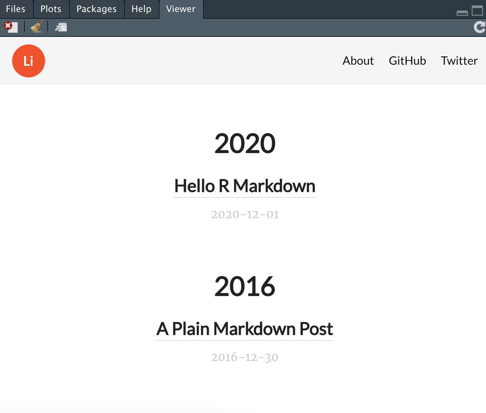

This post is made for the blog of community women.code(be).

The purpose of this tutorial
Did you ever think about making your own website or personal blog easily and for free? Or maybe you want to learn some web development basics? Then this tutorial might be interesting for you. Below we will create a static website in markdown with R programming language and deploy it to Github Pages. Don’t be afraid if you are not familiar with R or markdown. The instructions are simple and anyone even with a short experience in programming can easily follow them. You should be also familiar with the use of terminal because site building and page editing can’t be accessible through a graphical interface as in WordPress. Nevertheless, RStudio IDE makes the development much more user friendly and straightforward than just in terminal and text editor.
You can also use this tutorial to get some practice with markdown and R programming language or R markdown. R markdown is often used by R developers to combine code and visualizations of their data in reports, dashboards or presentations. For example, AirBnb uses R markdown for the documentation of their research in R.
The website in R is created with the blogdown package. Blogdown is based on a popular static site generator Hugo that renders your markdown content into HTML files. In other words, Hugo will transform your content so it can be read by any web browser. You don’t need to know much about Hugo at this stage since everything is done by blogdown package.
This tutorial will approximately take 1-2 hours of your time depending on your experience. Be aware that further settings of style (e.g. themes, css) and creating content are not explained in this post. I leave this part to you or will cover it in future. Together we will run through all the steps to build our R markdown-powered blog in Rstudio IDE.
Step 0. Prerequisites
To be able to follow the tutorial you need to have this software on your PC:
This link should help you to set up the R environment. First, you need to install R. Second, install RStudio. Here is another link that tells you how to install git in case you don’t have it yet. Also you will need to have an account on GitHub.
Step 1. Install blogdown and Hugo
First, let’s run these two commands in the R console to install blogdown and hugo.
install.packages("blogdown")
blogdown::install_hugo()This will install all packages needed for a correct work of blogdown and hugo. In case if you already have them, please check the latest updates and update these packages if needed.
Step 2. Create Rstudio project
Now let’s create a new project in "File" \(\rightarrow\) "New Project..." menu. Select "New Directory":
Then select "Website using blogdown":

Fill in a directory and project name as shown in figure below:

Step 3. Creating a GitHub repository
Publishing our website via Github Pages requires some additional customization. We will need to create a new repository in Github. For example, let’s call it “rblogexample”. In step 6, we’ll take a look at how to deploy a website to Github more closely.
Step 4. Customize ‘config.yaml’
Now we need to modify our config.yaml that is located in the main folder of your project. Open config.yaml and change the fields as follows:
- Set up the base URL to the “root” of the web page:
https://<user_name>.github.io/<repo_name>. For example, in my case it is https://annavarzina.github.io/rblogexample/).
baseurl: https://annavarzina.github.io/rblogexample/
- Change the default
/publicfolder to a custom folder of the repository outside of the project. In this example I named the folder/myblogwhich I put one level up. It is needed because your website should be kept in the separate repository. Therefore, every time you make changes in the project and make a build, the website folder will be automatically updated. So there is no need to copy a new website version manually. Moreover, you will need to initiate git in the website folder while your project sources can have a separate version control.
publishdir: ../myblog
- [Optional] Add title:
title: R blog example
- [Optional] Update
menuand add/change the links (Github/Twitter/Other):
menu:
main:
- name: About
url: /about/
- name: GitHub
url: https://github.com/rstudio/blogdown
- name: Twitter
url: https://twitter.com/rstudioStep 5. Build website
Now we can build our blog by running these commands:
blogdown::build_site()
blogdown::serve_site() Additionally, you can also run library(blogdown) in the console. This will allow you to run your commands without having to write the blogdown:: prefix. In this tutorial we use the first method in order to show explicitly that these commands belong to the blogdown library.
Now we are ready to view our website in the Rstudio viewer or browser!
http://localhost:4321/rblogexample

After it has been built, the components are placed in the folder /myblog which we defined in the configurations earlier.
In order to stop running site, use the following command:
blogdown::stop_site()
TIP!
If you want to personalize your blog there is a variety of options available that will let you adjust the styling with existing Hugo-themes, custom CSS or JavaScript. This is not really a part of this tutorial’s scope, but this might help you get started:
- Hugo themes. Update
themeinconfig.yamlwith themes from https://themes.gohugo.io/. - Replace logo. Just use your own file and place it to
/static/images/logo.pngpath. Inconfig.yamlit should look as:
logo:
alt: Logo
height: 50
url: logo.png
width: 50- CSS. For example, put it to
/static/css/custom.cssand updateconfig.yamlwithcustomCSS: ["css/custom.css"]inparams. - JavaScript. For example, put it to
/static/js/custom.jsand updateconfig.yamlwithcustomJS: ["js/custom.js"]inparams.
Step 6. Deploy to Github
First, let’s create a version control in the project folder so we can track changes. Secondly, we’ll initialize git in the rendered blog folder (/myblog). You can use Rstudio Terminal to create a git repository (Click "View" -> "Move focus to Terminal" if the terminal window is not open).
Write the following commands in the terminal:
cd ../myblog
git init
git add .
git commit -m "Init blogdown site"
git branch -M mainAdding the remote repository (it is always a good practice to make a connection with SSH key):
git remote add origin git@github.com:annavarzina/rblogexample.git
Now we can upload changes to remote repository:
git push -u origin main
After the deployment, go to repository settings and scroll down to Github Pages.
Choose branch main, directory /root and click on Save.
Your webpage styles will be updated in a while and you can enjoy it via link
https://<user_name>.github.io/<repo_name>.
Step 7. Create post
Go back to your console and make a new post with the new_post() function similarly to:
blogdown::new_post(title = "My first blog post",
author = "annav", ext = ".Rmd")By default, it will be created with the extension .md. Personally, I prefer R Markdown instead and thus explicitly define the extension as .Rmd. The file will be generated in folder /content/post/yyyy-mm-dd-my-first-blog-post where yyyy-mm-dd is the date. Now we will fill it with the content (according to markdown rules) and push the button Knit. The .html file will be rendered and saved in the same folder.
Step 8. Publish changes
Rebuild website for publishing with blogdown::build_site().
The website will look like this now:
Now all we need to do is commit the changes (in both project and output directories) and deploy them (in /myblog repository):
git add .
git commit -m "Create new post"
git push origin mainStep 9. [Optional] Customize domain name
If you are interested you can go one step further and use your own domain name instead of <user_name>.github.io. Github will only serve as a hosting then.
To do that we should change a baseurl in config file to the domain (www.example.com). In repository settings on the Github pages sectionm we’ll add the same domain name (www.example.com). Github will automatically generate a CNAME file and commit it. !Do not forget to fetch this commit! And we will also have to link the domain with Github which is done with the DNS provider of our website. There you will have to link the CNAME * and www with <user_name>.github.io. You might have to wait up to 24 hours until these changes take place. Once it is done, the new blog should work on your own domain name. f you want to learn more about this, check out this link on how to manage a custom domain in Github.
Congratulations!
Let me welcome you in the world of blogging! Now you can enjoy your new blog and create your own content. My blog is also made in this manner and I am pretty happy with it especially because I write mostly about programming topics, mathematics and data science with R markdown.
If you have questions or suggestions, do not hesitate e-mail me at varzinaanna@gmail.com.
Acknowledgements
Thanks WomendotCode(be) and especially Claudia for the review and valuable suggestions to this post!
References
Here are a few additional links for more information and extra reading: